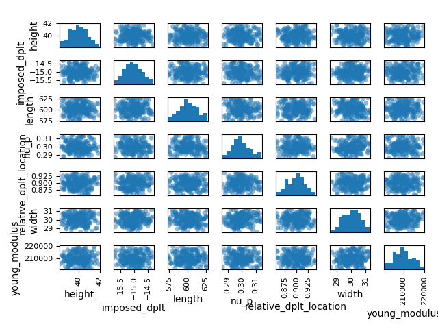

Note
Click here to download the full example code
1) Usage of the Uncertainty Quantification¶
The :class:~.StatisticsTool provides methods for quantifying uncertainties
on a model output.
The :class:~.BendingTestAnalytical is used to illustrate the use of this tool.
from __future__ import annotations
import logging
from pprint import pprint
from gemseo.datasets.dataset import Dataset
from gemseo.post.dataset.scatter import Scatter
from matplotlib import pyplot as plt
from numpy import array
from vimseo import EXAMPLE_RUNS_DIR_NAME
from vimseo.api import activate_logger
from vimseo.api import create_model
from vimseo.core.model_settings import IntegratedModelSettings
from vimseo.tools.doe.doe import DOETool
from vimseo.tools.space.space_tool import SpaceTool
from vimseo.tools.statistics.statistics_tool import StatisticsTool
activate_logger(level=logging.INFO)
model_name = "BendingTestAnalytical"
load_case = "Cantilever"
model = create_model(
model_name,
load_case,
model_options=IntegratedModelSettings(
directory_archive_root=f"../../../{EXAMPLE_RUNS_DIR_NAME}/archive/uq",
directory_scratch_root=f"../../../{EXAMPLE_RUNS_DIR_NAME}/scratch/uq",
cache_file_path=f"../../../{EXAMPLE_RUNS_DIR_NAME}/caches/uq/{model_name}_{load_case}_cache.hdf",
),
)
Out:
INFO - 15:51:11: Found 100 entries in the cache file : ../../../model_runs/caches/uq/BendingTestAnalytical_Cantilever_cache.hdf node : node
It is possible to change a default input of the model.
model.default_input_data.update({"imposed_dplt": array([-15.0])})
2. Define the uncertain space¶
In addition to the model,
we need to define the uncertain space over which statistics will be computed.
The uncertainty is filled with independent random variables.
This operation is performed with the :class:~.SpaceTool.
Several builders can be used to construct the distributions.
space_tool = SpaceTool(working_directory="SpaceTool_results")
print(space_tool.get_available_space_builders())
Out:
['FromCenterAndCov', 'FromMinAndMax', 'FromModelCenterAndCov', 'FromModelMinAndMax', 'SpaceBuilder']
The model can be used as input such that the bounds of the model input variables
or the central value of its input variable intervals can be used to build
the probability distributions of the random variables.
Here the uncertain space is built from the model, using the central value of its
input variable intervals. A coefficient of variation is used to define the width
of the distribution, which is :math:\pm cov * central\_value.
We consider independent random variables triangularly distributed:
.. note::
A triangular distribution is a probability distribution defined by a lower bound, a mode and an upper bound:
.. figure:: /_examples/uq/_static/triangular_distribution.png
Probability density function of the random variable *friction*
distributed as a triangular distribution :math:`\mathcal{T}(0.1, 0.2, 0.3)`.
Here, the space of parameters is built in two steps. First, considering all input variables of the model except "relative_dplt_location".
retained_variables = model.get_input_data_names()
retained_variables.remove("relative_dplt_location")
space_tool.execute(
distribution_name="OTTriangularDistribution",
space_builder_name="FromModelCenterAndCov",
variable_names=retained_variables,
use_default_values_as_center=True,
model=model,
cov=0.05,
)
Out:
INFO - 15:51:11: Working directory is SpaceTool_results
/home/charles-thoulon/Documents/softs/vimseo/.tox/doc/lib/python3.11/site-packages/pydantic/main.py:209: DeprecationWarning:
Conversion of an array with ndim > 0 to a scalar is deprecated, and will error in future. Ensure you extract a single element from your array before performing this operation. (Deprecated NumPy 1.25.)
SpaceToolResult(metadata=ToolResultMetadata(generic={'datetime': '13-02-2026_15-51-11', 'version': '0.1.dev17+gda5deed25.d20260213'}, misc={}, settings={'distribution_name': 'OTTriangularDistribution', 'space_builder_name': 'FromModelCenterAndCov', 'minimum_values': None, 'maximum_values': None, 'center_value_expr': '', 'use_default_values_as_center': True, 'variable_names': ['length', 'width', 'height', 'imposed_dplt', 'young_modulus', 'nu_p'], 'center_values': None, 'cov': 0.05, 'truncate_to_model_bounds': True, 'lower_bounds': None, 'upper_bounds': None, 'size': 1}, report={}, model=None), parameter_space=Parameter space:
+---------------+-------------+-------------------+-------------+-------+-----------------------------------------------------------+--------------------+
| Name | Lower bound | Value | Upper bound | Type | Initial distribution | Transformation(x)= |
+---------------+-------------+-------------------+-------------+-------+-----------------------------------------------------------+--------------------+
| young_modulus | 199500 | 210000.0000000001 | 220500 | float | Triangular(lower=199500.0, mode=210000.0, upper=220500.0) | Trunc(x) |
| nu_p | 0.285 | 0.3 | 0.315 | float | Triangular(lower=0.285, mode=0.3, upper=0.315) | x |
| length | 570 | 600.0000000000003 | 630 | float | Triangular(lower=570.0, mode=600.0, upper=630.0) | Trunc(x) |
| width | 28.5 | 30.00000000000004 | 31.5 | float | Triangular(lower=28.5, mode=30.0, upper=31.5) | Trunc(x) |
| height | 38 | 40.00000000000004 | 42 | float | Triangular(lower=38.0, mode=40.0, upper=42.0) | Trunc(x) |
| imposed_dplt | -15.75 | -15 | -14.25 | float | Triangular(lower=-15.75, mode=-15.0, upper=-14.25) | x |
+---------------+-------------+-------------------+-------------+-------+-----------------------------------------------------------+--------------------+)
Then, specifically for "relative_dplt_location".
space_tool.execute(
distribution_name="OTTriangularDistribution",
space_builder_name="FromCenterAndCov",
center_values={"relative_dplt_location": 0.9},
cov=0.05,
)
parameter_space = space_tool.parameter_space
Out:
INFO - 15:51:11: Working directory is SpaceTool_results
/home/charles-thoulon/Documents/softs/vimseo/.tox/doc/lib/python3.11/site-packages/pydantic/main.py:209: DeprecationWarning:
Conversion of an array with ndim > 0 to a scalar is deprecated, and will error in future. Ensure you extract a single element from your array before performing this operation. (Deprecated NumPy 1.25.)
Other distributions can be used and the available ones can be listed with:
print(space_tool.get_available_distributions())
Out:
('OTUniformDistribution', 'OTTriangularDistribution', 'OTNormalDistribution')
.. note::
For a one-shot use,
we can also instantiate a uncertain space
directly from :class:ParameterSpace.
.. code::
from gemseo.api import create_parameter_space
parameter_space = create_parameter_space()
for (name, minimum, mode, maximum) in [
("plate_len", 210, 214.3, 220.0),
("plate_wid", 50.5, 50.8, 51.0),
("plate_thick", 2.9, 3.0, 3.1),
("friction", 0.1, 0.2, 0.3),
("boundary", 57000.0, 60000.0, 63000.0),
("huth_factor", 0.95, 1., 1.05),
("preload", -10500., -10000., -9500.)
]:
parameter_space.add_random_variable(
name,
"OTTriangularDistribution",
minimum=minimum,
maximum=maximum,
mode=mode
)
In this case, we can use any distribution of
OpenTURNS <https://openturns.github.io/openturns/latest/user_manual/
probabilistic_modelling.html>
and
SciPy <https://docs.scipy.org/doc/scipy/reference/
stats.html#probability-distributions>.
Discover this uncertain space and check its content by printing it:
print(parameter_space)
Out:
Uncertain space:
+------------------------+-------------------------------------------------------------+--------------------+
| Name | Initial distribution | Transformation(x)= |
+------------------------+-------------------------------------------------------------+--------------------+
| young_modulus | Triangular(lower=199500.0, mode=210000.0, upper=220500.0) | Trunc(x) |
| nu_p | Triangular(lower=0.285, mode=0.3, upper=0.315) | x |
| length | Triangular(lower=570.0, mode=600.0, upper=630.0) | Trunc(x) |
| width | Triangular(lower=28.5, mode=30.0, upper=31.5) | Trunc(x) |
| height | Triangular(lower=38.0, mode=40.0, upper=42.0) | Trunc(x) |
| imposed_dplt | Triangular(lower=-15.75, mode=-15.0, upper=-14.25) | x |
| relative_dplt_location | Triangular(lower=0.855, mode=0.9, upper=0.9450000000000001) | x |
+------------------------+-------------------------------------------------------------+--------------------+
We can also sample this uncertain space:
three_samples = parameter_space.compute_samples(3, as_dict=True)
print("Three samples in the parameter space", three_samples)
Out:
Three samples in the parameter space [{'young_modulus': array([202752.62219344]), 'nu_p': array([0.30528288]), 'length': array([587.42805404]), 'width': array([29.62851013]), 'height': array([40.03572386]), 'imposed_dplt': array([-15.24811955]), 'relative_dplt_location': array([0.89377835])}, {'young_modulus': array([204612.62851749]), 'nu_p': array([0.30509775]), 'length': array([586.66259878]), 'width': array([28.94353679]), 'height': array([38.64970893]), 'imposed_dplt': array([-14.94163202]), 'relative_dplt_location': array([0.91107004])}, {'young_modulus': array([208803.97826857]), 'nu_p': array([0.29387019]), 'length': array([604.8271154]), 'width': array([31.37922016]), 'height': array([39.01746569]), 'imposed_dplt': array([-14.44597422]), 'relative_dplt_location': array([0.91027066])}]
3. Post-process¶
Lastly, we can generate some visualizations from 200 realizations of the input variables:
dataset = Dataset.from_array(
parameter_space.compute_samples(200), parameter_space.uncertain_variables
)
|gemseo| provides several plots in package 
gemseo.post.dataset.
Here, these 200 realizations for a pair of variables are shown in a scatter plot:
scatter_plot = Scatter(
dataset,
x="length",
y="width",
)
fig = scatter_plot.execute(
show=True,
save=False,
directory_path=space_tool.working_directory,
file_format="html",
)
fig
Out:
[Figure({
'data': [{'hovertemplate': 'length=%{x}<br>width=%{y}<extra></extra>',
'legendgroup': '',
'marker': {'color': '#000001', 'symbol': 'circle'},
'mode': 'markers',
'name': '',
'orientation': 'v',
'showlegend': False,
'type': 'scatter',
'x': array([592.07768392, 609.34093296, 621.88886066, 595.7652567 , 606.95712995,
590.93874026, 598.71987113, 606.00679779, 579.62394039, 594.32188374,
584.85944588, 599.93974701, 588.19721456, 605.76968635, 581.63385415,
618.03181724, 615.50788273, 608.74771814, 603.54778615, 611.23642901,
603.41034411, 577.32692321, 596.05566204, 587.57932243, 590.02987269,
584.62939564, 590.64326525, 581.52247337, 580.85344911, 599.39064575,
594.75649686, 575.80266874, 592.60966763, 609.71049698, 588.78230571,
590.25280444, 625.8461115 , 590.39697875, 593.86065715, 587.47119724,
579.47387384, 613.59298031, 588.01651541, 583.83032051, 602.10220781,
613.48471035, 617.67440148, 589.80817544, 611.89479446, 599.21036783,
576.07614237, 588.81317008, 616.91927234, 600.36336022, 579.61773784,
580.81143282, 624.02695567, 574.35523354, 597.04663498, 577.11482293,
603.38634477, 590.11631981, 586.65379595, 616.4801109 , 582.63042456,
603.42348572, 590.19764854, 597.71671945, 591.31193343, 617.40656747,
611.97006232, 612.59033963, 601.33296095, 584.87711177, 589.00495616,
606.44459805, 596.33204491, 604.92581403, 605.2097485 , 608.31128838,
607.04292632, 577.45520885, 602.85660448, 600.19055338, 616.86048258,
612.64123078, 599.77746509, 604.15862615, 575.43971884, 613.05392855,
607.84981987, 611.45099803, 591.35306142, 606.15978208, 588.42668333,
597.39517029, 579.78702037, 602.53651778, 615.50006339, 599.24430168,
592.23257203, 595.79589154, 619.66380201, 623.98273857, 620.10130634,
597.8868816 , 614.83585031, 592.90005063, 620.91303692, 601.75603556,
597.30588938, 611.02649926, 608.37487919, 600.91336971, 590.03106673,
596.55769779, 611.26121915, 601.26906822, 605.0594868 , 589.65432304,
594.41059479, 585.58315 , 592.97445672, 579.61320481, 592.84546713,
579.87238585, 602.12812139, 610.04625088, 584.97021876, 585.07842422,
589.01308243, 583.34050917, 611.39215896, 594.56781942, 605.38893292,
605.42717207, 585.59075376, 584.74224251, 590.79739633, 601.15505031,
597.99730966, 585.56435118, 595.0804397 , 601.65395492, 614.60151202,
624.26813691, 584.61176981, 584.2894191 , 598.43091253, 587.12140366,
591.69928275, 605.49443192, 596.55176748, 606.03855848, 585.14744672,
600.1784984 , 581.11306212, 588.12793579, 596.72131188, 616.4570976 ,
613.76428097, 586.75025064, 577.14982536, 603.36999093, 589.48152738,
593.8249851 , 604.94643899, 597.20722775, 598.54693829, 584.81355975,
598.21529713, 579.14771462, 611.65642561, 593.535571 , 601.22674669,
595.65908741, 625.08397094, 609.00560255, 602.80158246, 591.99823646,
616.75866988, 588.28582571, 578.22479606, 617.93685041, 592.71983871,
595.34230753, 599.29324612, 605.83750231, 614.41955955, 581.88187051,
584.05515894, 588.91278676, 584.84214013, 600.5497794 , 600.85481367,
595.52942097, 594.5206523 , 614.76217315, 614.40746141, 597.75445024]),
'xaxis': 'x',
'y': array([29.08210899, 30.36159024, 29.15081699, 29.40852256, 30.63523176,
30.18915363, 28.84477919, 29.93669314, 29.54992158, 30.31908963,
29.70515496, 29.87524839, 29.87160599, 30.21735339, 29.47880682,
29.75794994, 29.78563976, 29.16693209, 28.74652565, 30.62890398,
31.29627932, 30.57547673, 30.55542742, 30.29230273, 30.55015068,
30.55820896, 29.29993848, 29.88118952, 30.39499766, 31.05586443,
29.41874876, 30.0630493 , 28.73866036, 29.79861237, 30.2655541 ,
29.7775917 , 30.84126381, 30.74180984, 29.74551002, 31.08838236,
29.3240523 , 29.85294879, 30.41634176, 31.18329864, 29.62822678,
30.81175395, 29.70708941, 29.6339 , 29.60371576, 30.04323295,
29.76478968, 30.02974486, 29.18069058, 30.64007171, 30.13363519,
29.85932947, 29.46702272, 30.238357 , 30.03775709, 31.42296859,
29.51036417, 29.87758689, 30.80859273, 31.09516272, 29.99904035,
29.08682021, 30.07733257, 30.27311059, 29.55732494, 30.30738661,
30.27235393, 29.83265716, 30.76526472, 29.53634793, 30.40018109,
29.74064939, 30.4381564 , 30.67908074, 29.8603854 , 30.1172304 ,
29.63685929, 29.1827569 , 30.19931125, 29.68665247, 30.06633584,
28.65820331, 30.13429182, 30.53843816, 31.17872257, 31.01264134,
29.86325309, 30.4671542 , 29.45206427, 30.92105701, 30.32742412,
30.44043364, 29.53298755, 29.18929666, 29.54868754, 29.0810678 ,
31.0530147 , 30.27706358, 29.76113624, 28.94410533, 29.54368635,
29.40159943, 30.4756888 , 29.26277222, 30.43799015, 30.07570145,
29.25416734, 30.45399925, 31.21496201, 30.94013351, 31.10572102,
30.34786206, 29.8464158 , 30.11832581, 30.17796187, 29.79175397,
30.38137224, 30.0644645 , 30.40253899, 30.68575119, 30.43855907,
29.9108458 , 29.2697412 , 30.67546201, 29.35332541, 30.38119486,
29.65691914, 29.04185246, 29.87319592, 30.90268316, 29.82662672,
30.47161171, 29.42339382, 30.75287529, 29.42307087, 29.91019499,
30.25814136, 30.30174931, 29.48472463, 29.48376655, 30.67264215,
30.0493459 , 29.82203338, 30.19379377, 29.56624189, 30.42574199,
31.09341771, 30.45749963, 30.51853926, 29.73756911, 30.82365776,
30.85079807, 30.45569426, 29.57180625, 30.84760515, 30.40435213,
29.17928768, 31.01053828, 29.7607319 , 29.35649849, 29.37814172,
28.90509035, 30.50586897, 30.19903141, 29.30779873, 30.36112536,
29.76510329, 29.65982005, 30.87120538, 29.25907388, 29.40449024,
30.01121271, 28.74984631, 30.07930915, 29.36209564, 29.74205487,
29.66082328, 29.42456367, 31.31634542, 30.09307401, 30.41741902,
30.27491721, 31.10316507, 29.56251857, 30.44261084, 29.31132108,
29.4506236 , 30.44358831, 28.76629467, 29.7574874 , 29.97315184,
30.67086067, 29.58980665, 30.60905258, 30.06988692, 29.36554881]),
'yaxis': 'y'}],
'layout': {'legend': {'tracegroupgap': 0},
'margin': {'t': 60},
'template': '...',
'title': {'text': ''},
'xaxis': {'anchor': 'y', 'domain': [0.0, 1.0], 'title': {'text': 'length'}},
'yaxis': {'anchor': 'x', 'domain': [0.0, 1.0], 'title': {'text': 'width'}}}
})]
Dedicated plots from |v| tools can also be used.
For instance, the :class:~.SpaceTool provides a scatter matrix plot
where the diagonal blocks represent the histograms of the random variables
while the other blocks represents the value of a variable versus another.
space_tool.plot_results(space_tool.result, save=False, show=True, n_samples=200)
# Workaround for HTML rendering, instead of ``show=True``
plt.show()

Out:
/home/charles-thoulon/Documents/softs/vimseo/.tox/doc/lib/python3.11/site-packages/gemseo/utils/matplotlib_figure.py:59: UserWarning:
FigureCanvasAgg is non-interactive, and thus cannot be shown
/home/charles-thoulon/Documents/softs/vimseo/docs/runnable_examples/11_uncertainty_quantification/plot_01_uq.py:199: UserWarning:
FigureCanvasAgg is non-interactive, and thus cannot be shown
.. seealso::
Examples of visualization tools <https://gemseo.readthedocs.io/en/stable/examples/dataset/index.html>__
to post-process a :class:~.gemseo.datasets.dataset.Dataset.
3. Sample the model¶
Then,
we generate 100 input-output samples of the model
by sampling the discipline with the :class:~.DOETool executed from a design of
experiments (DOE). The :class:~.DOETool is based on :class:~.gemseo.core.doe_scenario.DOEScenario
To place the samples over the input space, we can use an optimal
latin hypercube sampling (LHS) <https://en.wikipedia.org/wiki/Latin_hypercube_sampling>__ technique.
.. note::
The LHS technique implemented by "OT_LHS" or "lhs" is stochastic:
given a number of samples :math:N and an input space of dimension :math:d,
executing it twice will lead to two different series of samples.
Here, we are looking for the series of samples that best covers the input space
(we talk about space-filling DOE);
for that,
we use "OT_OPT_LHS" relying on a global optimization algorithm
(simulated annealing).
doe_tool = DOETool(working_directory="doe_tool_results")
output_names = ["reaction_forces"]
dataset = doe_tool.execute(
model=model,
parameter_space=parameter_space,
output_names=output_names,
algo="OT_OPT_LHS",
n_samples=100,
).dataset
Out:
INFO - 15:51:12: Working directory is doe_tool_results
INFO - 15:51:12:
INFO - 15:51:12: *** Start DOE_BendingTestAnalytical_Cantilever_OT_OPT_LHS_100 execution ***
INFO - 15:51:12: DOE_BendingTestAnalytical_Cantilever_OT_OPT_LHS_100
INFO - 15:51:12: Disciplines: Model BendingTestAnalytical: An analytical model for the bending of a parallelepipedic beam
INFO - 15:51:12:
INFO - 15:51:12: Load case:
INFO - 15:51:12: Load case Cantilever: A cantilever load case.
INFO - 15:51:12:
INFO - 15:51:12: Boundary condition variables:
INFO - 15:51:12: ['imposed_dplt', 'relative_dplt_location']
INFO - 15:51:12:
INFO - 15:51:12: Plot parameters:
INFO - 15:51:12: {
INFO - 15:51:12: "curves": []
INFO - 15:51:12: }
INFO - 15:51:12: Load:
INFO - 15:51:12: Load(direction='', sign='', type='')
INFO - 15:51:12:
INFO - 15:51:12: Default values:
INFO - 15:51:12:
INFO - 15:51:12: Default geometrical variables:
INFO - 15:51:12: {
INFO - 15:51:12: "height": [
INFO - 15:51:12: 40.00000000000004
INFO - 15:51:12: ],
INFO - 15:51:12: "length": [
INFO - 15:51:12: 600.0000000000003
INFO - 15:51:12: ],
INFO - 15:51:12: "width": [
INFO - 15:51:12: 30.000000000000036
INFO - 15:51:12: ]
INFO - 15:51:12: }
INFO - 15:51:12:
INFO - 15:51:12: Default numerical variables:
INFO - 15:51:12: {}
INFO - 15:51:12:
INFO - 15:51:12: Default boundary conditions variables:
INFO - 15:51:12: {
INFO - 15:51:12: "imposed_dplt": [
INFO - 15:51:12: -15.0
INFO - 15:51:12: ],
INFO - 15:51:12: "relative_dplt_location": [
INFO - 15:51:12: 0.9
INFO - 15:51:12: ]
INFO - 15:51:12: }
INFO - 15:51:12:
INFO - 15:51:12: Default material variables:
INFO - 15:51:12: {
INFO - 15:51:12: "nu_p": [
INFO - 15:51:12: 0.3
INFO - 15:51:12: ],
INFO - 15:51:12: "young_modulus": [
INFO - 15:51:12: 210000.00000000006
INFO - 15:51:12: ]
INFO - 15:51:12: }
INFO - 15:51:12: MDO formulation: DisciplinaryOpt
INFO - 15:51:12: Optimization problem:
INFO - 15:51:12: minimize reaction_forces(young_modulus, nu_p, length, width, height, imposed_dplt, relative_dplt_location)
INFO - 15:51:12: with respect to height, imposed_dplt, length, nu_p, relative_dplt_location, width, young_modulus
INFO - 15:51:12: over the design space:
INFO - 15:51:12: +------------------------+-------------------------------------------------------------+--------------------+
INFO - 15:51:12: | Name | Initial distribution | Transformation(x)= |
INFO - 15:51:12: +------------------------+-------------------------------------------------------------+--------------------+
INFO - 15:51:12: | young_modulus | Triangular(lower=199500.0, mode=210000.0, upper=220500.0) | Trunc(x) |
INFO - 15:51:12: | nu_p | Triangular(lower=0.285, mode=0.3, upper=0.315) | x |
INFO - 15:51:12: | length | Triangular(lower=570.0, mode=600.0, upper=630.0) | Trunc(x) |
INFO - 15:51:12: | width | Triangular(lower=28.5, mode=30.0, upper=31.5) | Trunc(x) |
INFO - 15:51:12: | height | Triangular(lower=38.0, mode=40.0, upper=42.0) | Trunc(x) |
INFO - 15:51:12: | imposed_dplt | Triangular(lower=-15.75, mode=-15.0, upper=-14.25) | x |
INFO - 15:51:12: | relative_dplt_location | Triangular(lower=0.855, mode=0.9, upper=0.9450000000000001) | x |
INFO - 15:51:12: +------------------------+-------------------------------------------------------------+--------------------+
INFO - 15:51:12: Solving optimization problem with algorithm OT_OPT_LHS:
INFO - 15:51:12: 1%| | 1/100 [00:00<00:00, 119.00 it/sec, obj=-9.37e+3]
INFO - 15:51:12: 2%|▏ | 2/100 [00:00<00:00, 142.86 it/sec, obj=-9.07e+3]
INFO - 15:51:12: 3%|▎ | 3/100 [00:00<00:00, 162.03 it/sec, obj=-1.1e+4]
INFO - 15:51:12: 4%|▍ | 4/100 [00:00<00:00, 179.27 it/sec, obj=-8.2e+3]
INFO - 15:51:12: 5%|▌ | 5/100 [00:00<00:00, 190.92 it/sec, obj=-9.45e+3]
INFO - 15:51:12: 6%|▌ | 6/100 [00:00<00:00, 192.44 it/sec, obj=-9.11e+3]
INFO - 15:51:12: 7%|▋ | 7/100 [00:00<00:00, 198.29 it/sec, obj=-8.51e+3]
INFO - 15:51:12: 8%|▊ | 8/100 [00:00<00:00, 204.43 it/sec, obj=-8.03e+3]
INFO - 15:51:12: 9%|▉ | 9/100 [00:00<00:00, 209.67 it/sec, obj=-9.3e+3]
INFO - 15:51:12: 10%|█ | 10/100 [00:00<00:00, 203.94 it/sec, obj=-7.85e+3]
INFO - 15:51:12: 11%|█ | 11/100 [00:00<00:00, 206.81 it/sec, obj=-1.02e+4]
INFO - 15:51:12: 12%|█▏ | 12/100 [00:00<00:00, 209.77 it/sec, obj=-8.24e+3]
INFO - 15:51:12: 13%|█▎ | 13/100 [00:00<00:00, 203.38 it/sec, obj=-1e+4]
INFO - 15:51:12: 14%|█▍ | 14/100 [00:00<00:00, 204.94 it/sec, obj=-9.05e+3]
INFO - 15:51:12: 15%|█▌ | 15/100 [00:00<00:00, 207.96 it/sec, obj=-9.73e+3]
INFO - 15:51:12: 16%|█▌ | 16/100 [00:00<00:00, 210.83 it/sec, obj=-8.26e+3]
INFO - 15:51:12: 17%|█▋ | 17/100 [00:00<00:00, 207.55 it/sec, obj=-9.72e+3]
INFO - 15:51:12: 18%|█▊ | 18/100 [00:00<00:00, 207.75 it/sec, obj=-8.27e+3]
INFO - 15:51:12: 19%|█▉ | 19/100 [00:00<00:00, 208.80 it/sec, obj=-9.32e+3]
INFO - 15:51:12: 20%|██ | 20/100 [00:00<00:00, 208.11 it/sec, obj=-9.74e+3]
INFO - 15:51:12: 21%|██ | 21/100 [00:00<00:00, 208.78 it/sec, obj=-1.06e+4]
INFO - 15:51:12: 22%|██▏ | 22/100 [00:00<00:00, 210.62 it/sec, obj=-8.66e+3]
INFO - 15:51:12: 23%|██▎ | 23/100 [00:00<00:00, 212.36 it/sec, obj=-8.83e+3]
INFO - 15:51:12: 24%|██▍ | 24/100 [00:00<00:00, 211.82 it/sec, obj=-8.79e+3]
INFO - 15:51:12: 25%|██▌ | 25/100 [00:00<00:00, 212.35 it/sec, obj=-1.13e+4]
INFO - 15:51:12: 26%|██▌ | 26/100 [00:00<00:00, 213.54 it/sec, obj=-9.27e+3]
INFO - 15:51:12: 27%|██▋ | 27/100 [00:00<00:00, 214.86 it/sec, obj=-8.01e+3]
INFO - 15:51:12: 28%|██▊ | 28/100 [00:00<00:00, 213.11 it/sec, obj=-9.87e+3]
INFO - 15:51:12: 29%|██▉ | 29/100 [00:00<00:00, 214.04 it/sec, obj=-9.84e+3]
INFO - 15:51:12: 30%|███ | 30/100 [00:00<00:00, 215.16 it/sec, obj=-1.11e+4]
INFO - 15:51:12: 31%|███ | 31/100 [00:00<00:00, 215.69 it/sec, obj=-8.74e+3]
INFO - 15:51:12: 32%|███▏ | 32/100 [00:00<00:00, 216.17 it/sec, obj=-7.77e+3]
INFO - 15:51:12: 33%|███▎ | 33/100 [00:00<00:00, 215.74 it/sec, obj=-1.02e+4]
INFO - 15:51:12: 34%|███▍ | 34/100 [00:00<00:00, 215.92 it/sec, obj=-9.89e+3]
INFO - 15:51:12: 35%|███▌ | 35/100 [00:00<00:00, 215.44 it/sec, obj=-1.01e+4]
INFO - 15:51:12: 36%|███▌ | 36/100 [00:00<00:00, 215.86 it/sec, obj=-1.04e+4]
INFO - 15:51:12: 37%|███▋ | 37/100 [00:00<00:00, 214.90 it/sec, obj=-1.22e+4]
INFO - 15:51:12: 38%|███▊ | 38/100 [00:00<00:00, 212.60 it/sec, obj=-1.05e+4]
INFO - 15:51:12: 39%|███▉ | 39/100 [00:00<00:00, 212.21 it/sec, obj=-9.66e+3]
INFO - 15:51:12: 40%|████ | 40/100 [00:00<00:00, 212.81 it/sec, obj=-1.09e+4]
INFO - 15:51:12: 41%|████ | 41/100 [00:00<00:00, 213.82 it/sec, obj=-1.14e+4]
INFO - 15:51:12: 42%|████▏ | 42/100 [00:00<00:00, 213.34 it/sec, obj=-9.71e+3]
INFO - 15:51:12: 43%|████▎ | 43/100 [00:00<00:00, 213.68 it/sec, obj=-1.07e+4]
INFO - 15:51:12: 44%|████▍ | 44/100 [00:00<00:00, 214.56 it/sec, obj=-9.63e+3]
INFO - 15:51:12: 45%|████▌ | 45/100 [00:00<00:00, 215.38 it/sec, obj=-1.17e+4]
INFO - 15:51:12: 46%|████▌ | 46/100 [00:00<00:00, 214.94 it/sec, obj=-1.1e+4]
INFO - 15:51:12: 47%|████▋ | 47/100 [00:00<00:00, 215.35 it/sec, obj=-9.43e+3]
INFO - 15:51:12: 48%|████▊ | 48/100 [00:00<00:00, 215.87 it/sec, obj=-1e+4]
INFO - 15:51:12: 49%|████▉ | 49/100 [00:00<00:00, 215.81 it/sec, obj=-9.99e+3]
INFO - 15:51:12: 50%|█████ | 50/100 [00:00<00:00, 215.77 it/sec, obj=-8.61e+3]
INFO - 15:51:12: 51%|█████ | 51/100 [00:00<00:00, 216.51 it/sec, obj=-9.75e+3]
INFO - 15:51:12: 52%|█████▏ | 52/100 [00:00<00:00, 217.11 it/sec, obj=-8.97e+3]
INFO - 15:51:12: 53%|█████▎ | 53/100 [00:00<00:00, 217.02 it/sec, obj=-9.97e+3]
INFO - 15:51:12: 54%|█████▍ | 54/100 [00:00<00:00, 216.71 it/sec, obj=-1.02e+4]
INFO - 15:51:12: 55%|█████▌ | 55/100 [00:00<00:00, 216.79 it/sec, obj=-1.02e+4]
INFO - 15:51:12: 56%|█████▌ | 56/100 [00:00<00:00, 216.64 it/sec, obj=-9.45e+3]
INFO - 15:51:12: 57%|█████▋ | 57/100 [00:00<00:00, 215.85 it/sec, obj=-1.07e+4]
INFO - 15:51:12: 58%|█████▊ | 58/100 [00:00<00:00, 215.59 it/sec, obj=-8.46e+3]
INFO - 15:51:12: 59%|█████▉ | 59/100 [00:00<00:00, 216.09 it/sec, obj=-9.61e+3]
INFO - 15:51:12: 60%|██████ | 60/100 [00:00<00:00, 216.55 it/sec, obj=-9.29e+3]
INFO - 15:51:12: 61%|██████ | 61/100 [00:00<00:00, 216.23 it/sec, obj=-7.4e+3]
INFO - 15:51:12: 62%|██████▏ | 62/100 [00:00<00:00, 216.57 it/sec, obj=-1.21e+4]
INFO - 15:51:12: 63%|██████▎ | 63/100 [00:00<00:00, 217.14 it/sec, obj=-9.36e+3]
INFO - 15:51:12: 64%|██████▍ | 64/100 [00:00<00:00, 217.55 it/sec, obj=-1.06e+4]
INFO - 15:51:12: 65%|██████▌ | 65/100 [00:00<00:00, 217.20 it/sec, obj=-9.85e+3]
INFO - 15:51:12: 66%|██████▌ | 66/100 [00:00<00:00, 217.53 it/sec, obj=-8.67e+3]
INFO - 15:51:12: 67%|██████▋ | 67/100 [00:00<00:00, 218.08 it/sec, obj=-9.66e+3]
INFO - 15:51:12: 68%|██████▊ | 68/100 [00:00<00:00, 216.98 it/sec, obj=-9.53e+3]
INFO - 15:51:12: 69%|██████▉ | 69/100 [00:00<00:00, 216.79 it/sec, obj=-1.21e+4]
INFO - 15:51:12: 70%|███████ | 70/100 [00:00<00:00, 217.27 it/sec, obj=-1.01e+4]
INFO - 15:51:12: 71%|███████ | 71/100 [00:00<00:00, 217.89 it/sec, obj=-8.71e+3]
INFO - 15:51:12: 72%|███████▏ | 72/100 [00:00<00:00, 217.93 it/sec, obj=-1.17e+4]
INFO - 15:51:12: 73%|███████▎ | 73/100 [00:00<00:00, 218.34 it/sec, obj=-1.04e+4]
INFO - 15:51:12: 74%|███████▍ | 74/100 [00:00<00:00, 218.63 it/sec, obj=-9.74e+3]
INFO - 15:51:12: 75%|███████▌ | 75/100 [00:00<00:00, 219.22 it/sec, obj=-8.81e+3]
INFO - 15:51:12: 76%|███████▌ | 76/100 [00:00<00:00, 219.31 it/sec, obj=-9.55e+3]
INFO - 15:51:12: 77%|███████▋ | 77/100 [00:00<00:00, 219.51 it/sec, obj=-9.78e+3]
INFO - 15:51:12: 78%|███████▊ | 78/100 [00:00<00:00, 219.98 it/sec, obj=-9.81e+3]
INFO - 15:51:12: 79%|███████▉ | 79/100 [00:00<00:00, 220.49 it/sec, obj=-1.06e+4]
INFO - 15:51:12: 80%|████████ | 80/100 [00:00<00:00, 220.29 it/sec, obj=-1.1e+4]
INFO - 15:51:12: 81%|████████ | 81/100 [00:00<00:00, 220.36 it/sec, obj=-9.65e+3]
INFO - 15:51:12: 82%|████████▏ | 82/100 [00:00<00:00, 220.77 it/sec, obj=-9.51e+3]
INFO - 15:51:12: 83%|████████▎ | 83/100 [00:00<00:00, 221.20 it/sec, obj=-9.38e+3]
INFO - 15:51:12: 84%|████████▍ | 84/100 [00:00<00:00, 221.10 it/sec, obj=-8.64e+3]
INFO - 15:51:12: 85%|████████▌ | 85/100 [00:00<00:00, 220.87 it/sec, obj=-1.26e+4]
INFO - 15:51:12: 86%|████████▌ | 86/100 [00:00<00:00, 221.10 it/sec, obj=-8.64e+3]
INFO - 15:51:12: 87%|████████▋ | 87/100 [00:00<00:00, 221.30 it/sec, obj=-9.26e+3]
INFO - 15:51:12: 88%|████████▊ | 88/100 [00:00<00:00, 220.67 it/sec, obj=-8.99e+3]
INFO - 15:51:12: 89%|████████▉ | 89/100 [00:00<00:00, 220.92 it/sec, obj=-1.09e+4]
INFO - 15:51:12: 90%|█████████ | 90/100 [00:00<00:00, 221.35 it/sec, obj=-1.07e+4]
INFO - 15:51:12: 91%|█████████ | 91/100 [00:00<00:00, 221.25 it/sec, obj=-8.82e+3]
INFO - 15:51:12: 92%|█████████▏| 92/100 [00:00<00:00, 221.28 it/sec, obj=-1.09e+4]
INFO - 15:51:12: 93%|█████████▎| 93/100 [00:00<00:00, 221.61 it/sec, obj=-1.05e+4]
INFO - 15:51:12: 94%|█████████▍| 94/100 [00:00<00:00, 222.01 it/sec, obj=-8.26e+3]
INFO - 15:51:12: 95%|█████████▌| 95/100 [00:00<00:00, 221.93 it/sec, obj=-7.9e+3]
INFO - 15:51:12: 96%|█████████▌| 96/100 [00:00<00:00, 221.89 it/sec, obj=-9.61e+3]
INFO - 15:51:12: 97%|█████████▋| 97/100 [00:00<00:00, 222.20 it/sec, obj=-7.71e+3]
INFO - 15:51:12: 98%|█████████▊| 98/100 [00:00<00:00, 222.56 it/sec, obj=-9.1e+3]
INFO - 15:51:12: 99%|█████████▉| 99/100 [00:00<00:00, 222.12 it/sec, obj=-8.73e+3]
INFO - 15:51:12: 100%|██████████| 100/100 [00:00<00:00, 222.33 it/sec, obj=-9.39e+3]
INFO - 15:51:12: Optimization result:
INFO - 15:51:12: Optimizer info:
INFO - 15:51:12: Status: None
INFO - 15:51:12: Message: None
INFO - 15:51:12: Number of calls to the objective function by the optimizer: 100
INFO - 15:51:12: Solution:
INFO - 15:51:12: Objective: -12628.333932773297
INFO - 15:51:12: Design space:
INFO - 15:51:12: +------------------------+-------------------------------------------------------------+--------------------+
INFO - 15:51:12: | Name | Initial distribution | Transformation(x)= |
INFO - 15:51:12: +------------------------+-------------------------------------------------------------+--------------------+
INFO - 15:51:12: | young_modulus | Triangular(lower=199500.0, mode=210000.0, upper=220500.0) | Trunc(x) |
INFO - 15:51:12: | nu_p | Triangular(lower=0.285, mode=0.3, upper=0.315) | x |
INFO - 15:51:12: | length | Triangular(lower=570.0, mode=600.0, upper=630.0) | Trunc(x) |
INFO - 15:51:12: | width | Triangular(lower=28.5, mode=30.0, upper=31.5) | Trunc(x) |
INFO - 15:51:12: | height | Triangular(lower=38.0, mode=40.0, upper=42.0) | Trunc(x) |
INFO - 15:51:12: | imposed_dplt | Triangular(lower=-15.75, mode=-15.0, upper=-14.25) | x |
INFO - 15:51:12: | relative_dplt_location | Triangular(lower=0.855, mode=0.9, upper=0.9450000000000001) | x |
INFO - 15:51:12: +------------------------+-------------------------------------------------------------+--------------------+
INFO - 15:51:12: *** End DOE_BendingTestAnalytical_Cantilever_OT_OPT_LHS_100 execution (time: 0:00:00.463097) ***
The Dataset containing the DOE result is a
Pandas <https://pandas.pydata.org>__
DataFrame.
People used to Pandas can go much further in terms of data analysis
(filtering, plotting, sorting, ...).
print(dataset.describe())
dataset.to_csv(doe_tool.working_directory / "data.csv", sep=";")
Out:
GROUP inputs outputs
VARIABLE young_modulus nu_p length width height imposed_dplt relative_dplt_location reaction_forces
COMPONENT 0 0 0 0 0 0 0 0
count 100.000000 100.000000 100.000000 100.000000 100.000000 100.000000 100.000000 100.000000
mean 210005.511999 0.299994 600.009767 30.000892 40.000695 -15.000093 0.899975 -9662.162514
std 4324.978485 0.006135 12.339617 0.612487 0.816029 0.308581 0.018516 1074.715533
min 200581.178400 0.286398 573.590282 28.687341 38.249402 -15.712991 0.857272 -12628.333933
25% 206998.379499 0.295729 591.408456 29.561105 39.419986 -15.219837 0.886844 -10251.378923
50% 210002.198295 0.300027 600.104095 29.996546 39.993815 -14.999020 0.900006 -9641.605037
75% 213057.306879 0.304340 608.517336 30.438497 40.585883 -14.784672 0.912774 -8826.880678
max 220348.631497 0.313206 628.926780 31.314395 41.731229 -14.309492 0.941171 -7395.834046
4. Compute statistics¶
The :class:~.StatisticsTool relies on |gemseo| to compute statistics
on a sampling. It allows to test several probability distributions
to find the one that best fits to the output distribution according
to a fitting criterion and a selection criterion.
Then, based on this synthetic distribution, several statistics indicators
can be computed like mean value, standard deviation or percentiles.
Select the output variable on which statistics are computed.
output_name = output_names[0]
The following options are used by default:
pprint(StatisticsTool().options)
Out:
{'confidence': 0.95,
'coverage': 0.05,
'dataset': None,
'fitting_criterion': 'Kolmogorov',
'level': 0.05,
'selection_criterion': 'best',
'tested_distributions': ['Uniform',
'Normal',
'LogNormal',
'Exponential',
'WeibullMin'],
'variable_names': []}
Default options can be overriden through the :meth:~.StatisticsTool.execute method.
Here the confidence value is modified.
statistic_tool = StatisticsTool(working_directory="statistics_tool_results")
results = statistic_tool.execute(
dataset=dataset,
variable_names=[output_name],
confidence=0.98,
)
print(results)
Out:
INFO - 15:51:12: Working directory is statistics_tool_results
INFO - 15:51:12: | Set goodness-of-fit criterion: Kolmogorov.
INFO - 15:51:12: | Set significance level of hypothesis test: 0.05.
INFO - 15:51:12: Fit different distributions (Uniform, Normal, LogNormal, Exponential, WeibullMin) per variable and compute the goodness-of-fit criterion.
INFO - 15:51:12: | Fit different distributions for reaction_forces.
INFO - 15:51:12: Select the best distribution for each variable.
INFO - 15:51:12: | The best distribution for reaction_forces[0] is WeibullMin([5697.67,5.737,-14933.6]).
Results of a Statistics analysis.
{
"generic": {
"datetime": "13-02-2026_15-51-12",
"version": "0.1.dev17+gda5deed25.d20260213"
},
"misc": {},
"model": null,
"report": {},
"settings": {
"confidence": 0.98,
"coverage": 0.05,
"fitting_criterion": "Kolmogorov",
"level": 0.05,
"selection_criterion": "best",
"tested_distributions": [
"Uniform",
"Normal",
"LogNormal",
"Exponential",
"WeibullMin"
],
"variable_names": [
"reaction_forces"
]
}
}
Best fitting distribution:
+--------------------------------------+
| reaction_forces |
+--------------------------------------+
| WeibullMin([5697.67,5.737,-14933.6]) |
+--------------------------------------+
Fitting matrix (goodness-of-fit measures):
+-----------------+-----------------------+--------------------+--------------------+-----------------------+--------------------+------------+
| Variable | Uniform | Normal | LogNormal | Exponential | WeibullMin | Selection |
+-----------------+-----------------------+--------------------+--------------------+-----------------------+--------------------+------------+
| reaction_forces | 5.713485287443738e-05 | 0.7680985200194305 | 0.7746323177782352 | 4.558305418956205e-11 | 0.8917679358498344 | WeibullMin |
+-----------------+-----------------------+--------------------+--------------------+-----------------------+--------------------+------------+
Statistics indicators:
OrderedDict([('maximum', {'reaction_forces': array([inf])}), ('minimum', {'reaction_forces': array([-14933.62924665])}), ('range', {'reaction_forces': array([inf])}), ('mean', {'reaction_forces': array([-9660.98586513])}), ('median', {'reaction_forces': array([-9588.57719802])}), ('compute_standard_deviation', {'reaction_forces': array([1064.73584445])}), ('variance', {'reaction_forces': array([1133662.41845893])}), ('percentile_5', {'reaction_forces': array([-11538.53804302])}), ('percentile_10', {'reaction_forces': array([-11084.67365462])}), ('percentile_25', {'reaction_forces': array([-10348.1809608])}), ('percentile_50', {'reaction_forces': array([-9588.57719802])}), ('percentile_75', {'reaction_forces': array([-8902.15269676])}), ('percentile_90', {'reaction_forces': array([-8344.40897986])}), ('percentile_95', {'reaction_forces': array([-8035.12191788])}), ('tolerance_interval', {'reaction_forces': [Bounds(lower=array([-9872.2535252]), upper=array([-9294.21362661]))]}), ('a_value', {'reaction_forces': array([[-12461.47306024]])}), ('b_value', {'reaction_forces': array([[-11202.39862381]])})])
The fitted synthetic distribution can be plotted.
statistic_tool.plot_results(results, variable=output_name, save=False, show=True)

Out:
/home/charles-thoulon/Documents/softs/vimseo/.tox/doc/lib/python3.11/site-packages/gemseo/utils/matplotlib_figure.py:59: UserWarning:
FigureCanvasAgg is non-interactive, and thus cannot be shown
<Figure size 1200x600 with 2 Axes>
Total running time of the script: ( 0 minutes 2.024 seconds)
Download Python source code: plot_01_uq.py